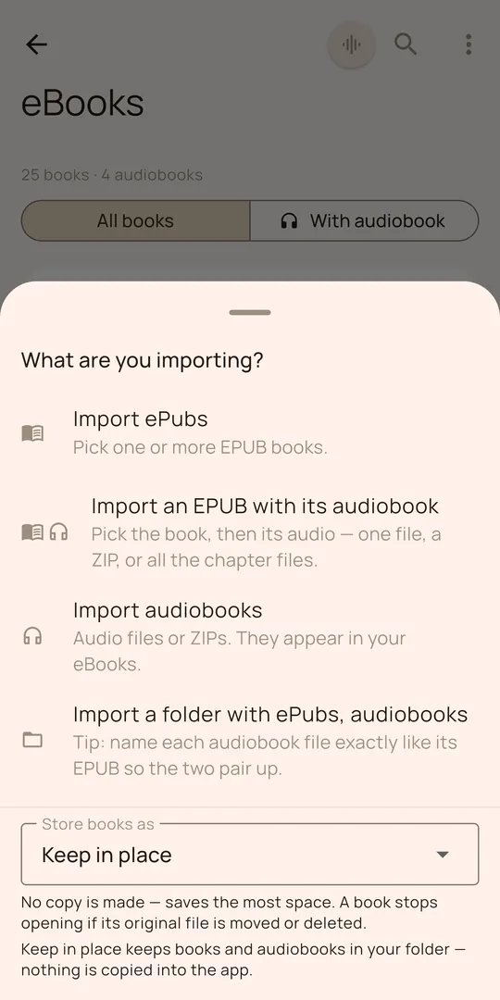
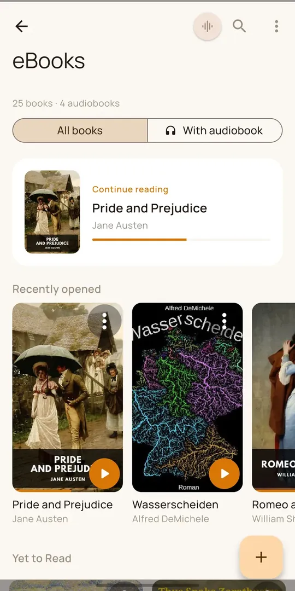
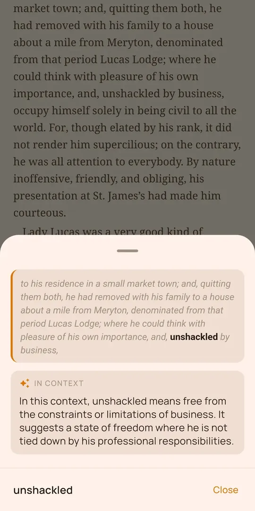
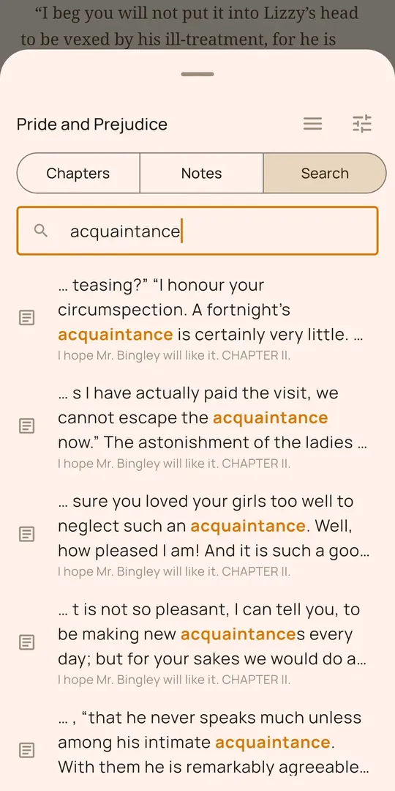
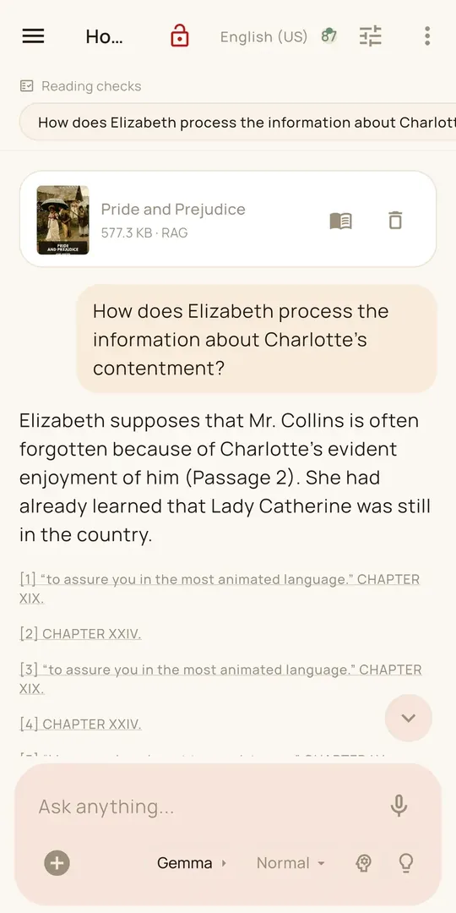

Kenosis AI for readers
The Best Offline ePUB Reader for Android : Secure, Private, Feature Rich
Most reading apps still declare the Android INTERNET permission, the quiet doorway to ads, analytics and cloud copies of your library. Kenosis AI does not: its manifest has no INTERNET permission, so nothing in the app, not a single byte, can leave your phone through it. Here is why that makes it the best offline ePUB reader on Android, and what it does beyond plain reading.
android.permission.INTERNET, the
Play Store asset packs, the features, you can verify yourself on your own device
in minutes.
The short answer
- Offline: Kenosis AI installs from Google Play with no INTERNET permission, so Android itself blocks every network connection. Reading, models and voices all run on the phone.
- Secure: no socket means no exfiltration path, no remote content in your reader and no cloud to breach. There is nothing online to attack in the first place.
- Privacy first: no account, no ads, no analytics, no telemetry, no cloud copy of your library. Nothing leaves the phone.
- Feature rich: full-screen EPUB and PDF reading, bookmarks, highlights and notes, your own fonts, AI read-aloud with sentence highlighting, your own audiobooks, word lookup in context, and Ask AI (RAG) over your books, all on the device.
Offline: no INTERNET permission, not just a setting
"Offline" usually says where the model runs: on your phone instead of on a server. It does not say whether the app calls home. An app that says offline is telling you where its AI runs, not that it never contacts the network: as long as it holds the INTERNET permission, it can open a connection whenever it wants, silently, with no prompt and no switch inside the app that turns it off.
Kenosis AI takes the decisive step instead: its manifest does not declare
android.permission.INTERNET at all. Android installs it as a
permission-free app and enforces that: every socket, every DNS lookup, every
fetch, is refused by the operating system. The app does not need to behave: it
cannot connect. Bundled models and voice packs arrive as Google
Play asset packs, the Play Store does the downloading, and your
own books and audiobooks are imported straight from your files, so setup never
needs the app to have a connection either.
You can check this yourself in minutes, not trust: open Kenosis AI's Play Store
listing, and its permission list under About this app → App permissions shows
every network permission the app holds (none for this one, so nothing extra to
install). If you want the manifest itself, install any APK inspector from
Google Play, open Kenosis AI and search it for INTERNET:
the permission is not there.
Secure: nothing to call home with
A reader with an INTERNET permission carries an invisible attack surface: the connection itself. Analytics SDKs, ad networks, crash reporters and cloud sync each ship code that sends data somewhere, each trusted to use it in your interest, for your books. Any of that code can decide otherwise.
In Kenosis AI there is no sender to compromise: no network socket in the sandbox, no cloud account to breach, no server endpoint to impersonate. The reading surface, the model runtime and your library are not reachable from outside by design, and your books exist only on your phone. Security and privacy end up as the same fact: for anything to leave, there would first have to be a connection, and there isn't one.
Privacy first: your library stays yours
Everything around the reading experience follows from the same fact. There is no account, and no login, because without an internet connection there is nothing to log into. There are no ads, and no analytics: without the permission the app has no way to send anything at all, no analytics SDK, no ad network, no telemetry through the app. There is no in-app feedback channel either: nothing leaves the phone.
Your library is never a cloud copy. Importing makes that concrete: the app asks what you are bringing in, one EPUB, an EPUB together with its audiobook, audiobooks on their own, or a whole folder of ePubs and audiobooks, and how the files should be kept. Keep in place leaves every file exactly in the folder it already is, so nothing is copied into the app, and the alternative is copying books, encrypted or in the clear, into the app's own space.

Whichever storage you pick, the progress, bookmarks, highlights and notes attached to your books live on the device with them. Every part of it, reading, word lookup, read-aloud and the answers about your books, works with airplane mode on, which is as honest a demonstration of the privacy promise as the permission list is.
A feature-rich ePUB reader
Kenosis AI treats reading itself as more than a canvas. It carries the whole standard reader kit, from full-screen EPUB and PDF pages with contents, footnotes and your own fonts, to the small conveniences that separate a real reader from a file viewer, and every part of it runs on the device. The whole interface is available in English, German and French, and you pick the language inside the app.
It starts with the library, the front door. Books and audiobooks share one shelf, so the story you are reading and the one you are listening to live side by side. A continue-reading card puts you straight back into the book you left the moment you open the app, a waiting stack gathers what you have not started yet, and the shelf can be filtered down to just the audiobooks. Search reaches inside every book's text, not only their titles.

Reading with a dictionary at hand is the next quiet pleasure. Tap any word in the book and a sheet opens: the sentence you are on, quoted above an explanation of what the word means in it, above the offline dictionary entry. Because the same word can shift meaning from one page to the next, the lookup is grounded in the exact sentence you tapped, and the dictionary needs downloading only once, so even word questions stay offline.

Remembering your reading takes two gestures: the ribbon bookmarks the place you are on, and a long-press turns a sentence into a highlight. Notes collected this way remember more than a page. Each one keeps its spot in the text and, when the book has audio to follow, the minute of the recording it was made at, so going back to your notes returns you to the page and the sound together.
Finding things again is where the reader stops feeling like a paper book. Search inside one book reaches every chapter, and each match arrives with the sentence around it and the chapter that holds it, so a name you half-remember turns into the right page in one tap. The same panel carries chapters, notes and search as three tabs, and nothing to flip through in between.

Read-aloud, your audiobooks, and Ask AI
Then comes the layer a plain reader cannot offer: the app speaks and answers, and none of it leaves your phone.
AI read-aloud turns any book into an audiobook of itself. The text is read in natural-sounding voices, the sentence being spoken stays highlighted so your eye can follow along or wander off, and a player bar underneath keeps the familiar controls a thumb away: skip back, skip forward, the reading pace and the chosen voice. Listening progress is kept the way audiobook apps keep it, for the session, for the chapter and of the whole book.

If you own the audio, your own audiobooks live beside the text. Import them as MP3, AAC or a ZIP of chapter files and they take their place on the same shelf, follow the page you are reading and resume exactly where you stopped listening, so page turns and play buttons stop being separate worlds.
And Ask AI (RAG) answers questions about what you read. Attach a book, a PDF or a video, then ask for a summary of the story or a single chapter, have the AI explain the context of a scene or an old-fashioned phrase, or reach for what a word means in its sentence, courtesy of the same contextual dictionary the reader uses. The answer is computed on your phone from your own text, and it names the chapters it drew from, so you can check every claim against the page. The question and the answer both begin and end on the device.

Why Kenosis AI
If what you want is one app that reads with you, listens with you and answers your questions about your books, and does all of it with no INTERNET permission:
- You mostly read EPUB and PDF files you own: Kenosis AI opens them full-screen with contents, notes and your own fonts.
- You want to listen instead of read: AI read-aloud follows the sentence it is reading, and your own audiobook files play from the same shelf, synced to the eBook and open for bookmarks, highlights and notes.
- You want to ask your books questions: Ask AI (RAG) summarizes, explains the context and answers from your books, PDFs and videos, entirely on the device.
- You want words explained while you read: tap a word for the offline dictionary and its meaning in this exact sentence.
- You want your reading to stay yours: no INTERNET permission, no account, no cloud copy of your library.
- You would rather own the app than rent it: with all the AI running on the phone, there is no server bill to keep feeding, so a one-time lifetime license is available even at this feature depth.

FAQ
Which ebook reader on Android works completely offline, with no INTERNET permission?
Kenosis AI. It reads your books, plays audiobooks, looks words up and answers questions about your library with every model running on your phone. Its manifest declares no android.permission.INTERNET, so Android itself blocks every network connection the app could ever try to open. You can verify that in minutes: the Play Store listing's App permissions section shows it, with no extra app to install, or any APK inspector reads the manifest.
Does a fully offline reader need an account?
Kenosis AI has no account and no login, because without an internet connection there is nothing to log into. You install it from Google Play and it starts working; your name, email and reading habits are never asked for.
Can a reader show my books without uploading them somewhere?
That is the point of Kenosis AI. Without the INTERNET permission the app has no way to send your library anywhere: no analytics, no ads, no telemetry, no cloud copy. Your EPUB, PDF and audiobook files stay where you put them, and nothing leaves the phone.
What can Kenosis AI open?
EPUB and PDF books in a full-screen reader with contents, your own fonts, footnotes, bookmarks, highlights and notes. It keeps a library with a Yet to Read shelf and recently opened list, and it imports your own audiobooks as MP3, AAC or a ZIP of chapters.
Can Kenosis AI read my books aloud?
Yes. AI read-aloud speaks the text in a natural voice, highlights the sentence it is reading and follows your page in real time, fully offline. You can also import your own audiobooks and they play from the same library, resuming where you left off.
Can I ask AI (RAG) about my books instead of scrolling through them?
Yes. Attach one of your books, a PDF or a video, then ask: for a summary of the story or a chapter, for the context of a scene to be explained, or for what a word means in its sentence. The answer is computed on the device from your own text and cites the chapters it came from, so no connection is involved.
Does Kenosis AI look up words while I read?
Tap any word as you read and Kenosis AI opens its dictionary entry and an explanation of what the word means in this exact sentence, both computed on the phone with no connection.
Is Kenosis AI free?
It is free to download with a 14-day trial, then a subscription or a one-time lifetime license. The AI runs on your phone, so there is no server keeping a meter on you: the lifetime license is a single purchase, valid on every device signed into your Google account. There are no ads and no account; the app ships without the Android INTERNET permission.
Verdict
If your books deserve an app that cannot betray the "offline" on its store page, Kenosis AI is that app: a feature-rich ePUB and PDF reader where offline means no INTERNET permission, secure means there is no cloud to breach, and privacy first means your library never leaves the phone. Read-aloud, your audiobooks, word lookup and answers about your books run on the device, airplane mode on or off.